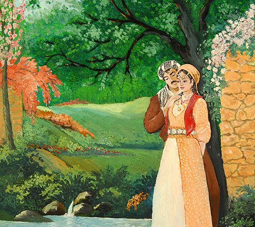

Mem û Zîn
Efsane, iki genç asigin trajik hikayesini anlatiyor. Mem, "Alan" klaninin genç Kürt çocugu ve Bati Sehri'nin varisi, "Botan" klanindan ve Botan Valisi'nin kizi olan Zîn'e, asik oldu.

Newroz kutlamalari tanismalarina vesile olur. Birliktelikleri Bakran klaninindan Beko tarafindan engellenir, tarih boyunca Mem ve Zîn'in karsisinda durmus ve iki sevgiliyi lanetli kiskançligiyla engellemistir.

Beko tarafindan tasarlanan bir komplo ile Mem ölür. Zin bu haberi ögrendiginde, Mem'in Mezari Basinda aglayarak çöker. Bu büyük aci onun ölümüne yol açar ve Cizre'de Mem'in yanina gömülür.

Mem ve Zin'in ölüm haberi insanlar arasinda hizla yayiliyor. Beko'nun trajedideki rolü ortaya çiktiginda, Mem'in en iyi arkadasi Tacdîn onu öldürür. Beko, Mem ve Zin mezarlarinin yanina gömülür.
Zin ölmeden önce, “Birlesememizin sebebi Beko'dur, eger ölürse, onu Mem ve benim yanima gömmenizi istiyorum. Ki sevgimize tanik olabilsin.

Bununla birlikte, Beko'nun kani ile beslenen dikenli bir çali mezari üzerinde büyür: Kötülügün kökleri Mem ve Zin mezarlarinin diyarina derinlemesine nüfuz eder ve böylece onlari ölümde bile ayirir.